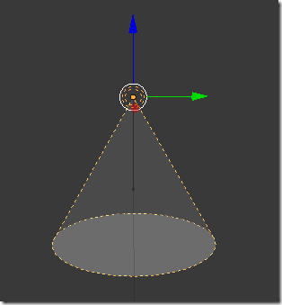

webGL - BABYLON JS
Moteur 3D open source


DWK
Introduction
OpenGL
WebGL
BabylonJS
Concepts de base
1- Initialisiation
2- Caméras
3- Eléments
4- Sources de lumière & ombres
5- Animations
Utilisation avancée
1- Importer des mesh
2- Actions
Conclusion
1- Avantages
2- Inconvéniants
3- Liens
Introduction
OpenGL
OpenGL (Open Graphics Library) est un ensemble normalisé de fonctions de calcul d'images 2D ou 3D lancé par Silicon Graphics en 1992 et qui permet à un programme de déclarer la géométrie d'objets sous forme de points, de vecteurs, de polygones, de bitmaps et de textures. OpenGL effectue ensuite des calculs de projection en vue de déterminer l'image à l'écran, en tenant compte de la distance, de l'orientation, des ombres, de la transparence et du cadrage
WebGL
WebGL est une spécification d'affichage 3D pour les navigateurs web, créée par Khronos Group permettant d'utiliser le standard OpenGL ES via les élements canvas du HTML5.
Il s'appuie sur différents languages et technologies:
- Canvas HTML5 (L'élément canvas est un composant de HTML qui permet d'effectuer des rendus dynamiques d'images bitmap via des scripts)
- JavaScript
- Données au format JSON
- Accélération matérielle pour les calculs et le rendu 3D à l'aide des pilotes OpenGL ES
BabylonJS
BabylonJS est un moteur 3D basé sur openGL et fait en Javascript. Il a été créé en mai 2013 par David Rousset et David Catuhe.
Il a été développé pour être simple d'utilisation et performant.
Il supporte un nombre varié de caméras (gamepad, virtual joysticks, device orientation...), de lights, de procédés de texturing et un moteur de collisions intégré.
Concepts de base
1 - Initialisation
HTML
On créé une balise html5 canvas avec un ID dans le DOM
C'est fini pour l'HTML...
CSS
html, body {
overflow: hidden;
width : 100%;
height : 100%;
margin : 0;
padding : 0;
}
#renderCanvas {
width : 100%;
height : 100%;
touch-action: none;
}
JS
// On va ajouter un Event Listener et encapsuler notre code ce qui nous permettra
// de charger le code quand le DOM sera entièrement chargé.
window.addEventListener('DOMContentLoaded', function() {
// On attribut la variable canvas à notre élément ajouté dans le DOM
var canvas = document.getElementById('davidooCanvas');
// On charge le moteur BabylonJS lié à notre élément canvas
var engine = new BABYLON.Engine(canvas, true);
// Notre fonction createScene
// Tout le code se trouvera encapsulé dans cette fonction!
var createScene = function(){
// On créé notre Object scene linké à engine
var scene = new BABYLON.Scene(engine);
// return the created scene
return scene;
}
// Assigne notre fonction createScene à scene
var scene = createScene();
// Lance le moteur - boucle
engine.runRenderLoop(function(){
scene.render();
});
// Check si la fenêtre est redimensionnée
window.addEventListener('resize', function(){
engine.resize();
});
});
Le moteur est initialisé et prêt à fonctionner
...
2 - Caméras
// Parameters : name, alpha, beta, radius, target, scene
var camera = new BABYLON.ArcRotateCamera("Camera", 0, 0.8, 90, BABYLON.Vector3.Zero(), scene);
camera.lowerBetaLimit = 0.1;
camera.upperBetaLimit = (Math.PI / 2) * 0.9;
camera.lowerRadiusLimit = 30;
camera.upperRadiusLimit = 150;
camera.attachControl(canvas, true);
Types de caméra
FreeCamera(name, position, scene)
ArcRotateCamera(name, alpha, beta, radius, target, scene)
TouchCamera(name, position, scene)
DeviceOrientationCamera(name, position, scene)
FollowCamera(name, position, scene)
VirtualJoysticksCamera(name, position, scene)
AnaglyphCamera(name, position (in Vector3), eyeSpace (in degrees), scene)
GamepadCamera(name, position, scene)
VRDeviceOrientationFreeCamera(name, position, scene)
3 - Elements
Ajout d'un sol et d'un cube dans notre scène
// On défini rapidement notre sol ( ground )
var ground = BABYLON.Mesh.CreateGround('ground1', 56, 56, 6, scene);
var materialGround = new BABYLON.StandardMaterial("textureground", scene);
materialGround.alpha = 1;
materialGround.diffuseColor = new BABYLON.Color3(0.5, 0.8, 0.9);
ground.material = materialGround;
// Il y a une foncton CreateBox(name, size, scene)
var box = BABYLON.Mesh.CreateBox("box1", 9.0, scene);
// On positionne notre cube dans la scene (x,y,z)
box.position = new BABYLON.Vector3(10, 8 , -6);
var materialBox = new BABYLON.StandardMaterial("texture1", scene);
materialBox.alpha = 1;
materialBox.diffuseColor = new BABYLON.Color3(1.0, 0.1, 0.3);
box.material = materialBox;
//materialBox.diffuseTexture = new BABYLON.Texture("http://texturelib.com/Textures/wood/planks%20new/wood_planks_new_0001_02_preview.jpg", scene);
See the Pen Babylon - box by blackratio (@blackratio) on CodePen.
4 - Sources de lumière & ombres
// Création de la source lumineuse attachée à une objet sphere
// Paramètres : name, position, scene
// Directional light
var lightDir = new BABYLON.DirectionalLight("dir01", new BABYLON.Vector3(-1, -2, -1), scene);
lightDir.position = new BABYLON.Vector3(20, 40, 20);
lightDir.intensity = 0.8;
var lightSphere = BABYLON.Mesh.CreateSphere("sphere", 10, 2, scene);
lightSphere.position = lightDir.position;
lightSphere.material = new BABYLON.StandardMaterial("light", scene);
lightSphere.material.emissiveColor = new BABYLON.Color3(1, 0, 0);
// SpotLight
var lightSpot = new BABYLON.SpotLight("spot02", new BABYLON.Vector3(30, 40, 20), new BABYLON.Vector3(-1, -2, 0), 1.1, 10, scene);
lightSpot.intensity = 0.5;
var lightSphere2 = BABYLON.Mesh.CreateSphere("sphere", 10, 2, scene);
lightSphere2.position = lightSpot.position;
lightSphere2.material = new BABYLON.StandardMaterial("light", scene);
lightSphere2.material.emissiveColor = new BABYLON.Color3(1, 1, 0);
SpotLight(name, position, scene)
See the Pen Babylon - lights by blackratio (@blackratio) on CodePen.
Sources lumineuses
PointLight(name, position, scene)
DirectionalLight(name, position, scene)
SpotLight(name, position, direction, angle, exposition, scene)
HemisphericLight(name, position, scene)
Il nous manque quelque chose...
Les ombres
// Nous allons utiliser la fonction ShadowGenerator et la lier à notre light
// Paramètres : taille, source de lumière
var shadowGenerator = new BABYLON.ShadowGenerator(600, lightDir);
// On souhaite voir l'ombre de notre box
shadowGenerator.getShadowMap().renderList.push(box);
// Il ne manque plus qu'à spécifier sur quel élément on souhaite projeter l'ombre
ground.receiveShadows = true;
// On peut également utiliser des filtres pour notre ombre, ici un blur
shadowGenerator.useBlurVarianceShadowMap = true;
See the Pen Babylon - lights and shadows by blackratio (@blackratio) on CodePen.
5 - Animations
// Animation
// On paramètre notre objet d'animation
// Paramètre : name, propriété, fps, type of change (float, vector, color, matrix), type of behavior ( loop, constant, relative )
var animationBox = new BABYLON.Animation("myAnimation", "position", 60, BABYLON.Animation.ANIMATIONTYPE_VECTOR3, BABYLON.Animation.ANIMATIONLOOPMODE_CYCLE);
// On définie la nouvelle position de notre objet (x,y,z)
var nextPos = new BABYLON.Vector3(-10, 8 , -6);
var nextPos2 = new BABYLON.Vector3(-10, 20 , -6);
// On créé un tableau pour nos différentes valeurs
var keys = [];
// On choisie nos valeurs pour chaque frame, 200 dans notre exemple
keys.push(
{
frame: 0,
value: box.position
},
{
frame: 100,
value: nextPos
},
{
frame: 200,
value: nextPos2
});
// On attache notre tableau de valeurs à notre object animation
animationBox.setKeys(keys);
// On lie notre animation à notre objet
box.animations.push(animationBox);
// On lance notre animation
// beginAnimation(target, from, to, optional loop, optional speedRatio, optionalonAnimationEnd(), animatable)
scene.beginAnimation(box, 0, 200, true);
See the Pen babylon - animation by blackratio (@blackratio) on CodePen.
Utilisation avancée
1 - Importer des meshs
// On va ajouter un Event Listener et encapsuler notre code ce qui nous permettra
// de charger le code quand le DOM sera entièrement chargé.
window.addEventListener('DOMContentLoaded', function() {
var canvas = document.getElementById("meshimportcanvas");
var engine = new BABYLON.Engine(canvas, true);
BABYLON.SceneLoader.Load("", "scene.babylon", engine, function (newScene) {
// Wait for textures and shaders to be ready
newScene.executeWhenReady(function () {
// Attach camera to canvas inputs
newScene.activeCamera.attachControl(canvas);
// Once the scene is loaded, just register a render loop to render it
engine.runRenderLoop(function() {
newScene.render();
});
});
}, function (progress) {
// To do: give progress feedback to user
});
});
2 - Actions
// On assigne un actionManager à notre box qui est lié à notre scène
box.actionManager = new BABYLON.ActionManager(scene);
// On peut appliquer ensuite n'importe quelle action
// Ici on va diffuser une lumière rouge via notre lightDir
box.actionManager.registerAction(new BABYLON.InterpolateValueAction(
BABYLON.ActionManager.OnPickTrigger, lightDir, "diffuse", BABYLON.Color3.Red(), 1000));
See the Pen Babylon - actions by blackratio (@blackratio) on CodePen.
3 - Bones et animations
BabylonJS permet également d'animer des objets via les bones créé dans un logiciel de modélisation. Les bones sont exportés/importés, on peut ensuite assigner à chaque bones une partie du mesh concerné et donc animer des objets tels que des personnages ou animaux.
Conclusion
1 - Avantages
Multi navigateur + IOS
Fonctionne avec les devices tactiles et WebVR (Oculus Rift par exemple)
Moteur physique oimo.js Open source
Léger et puissant -> 300 KB minifié
Options d'exports puissants (3dsmax, blender)
Gratuit - Licence Apache 2.0
2 - Inconvéniants
Navigateurs compatible webGL...
Code se densifie rapidement quand les scènes deviennent complexes
PPour des scènes plus complexes, on préférera three.js, qui est plus bas niveau